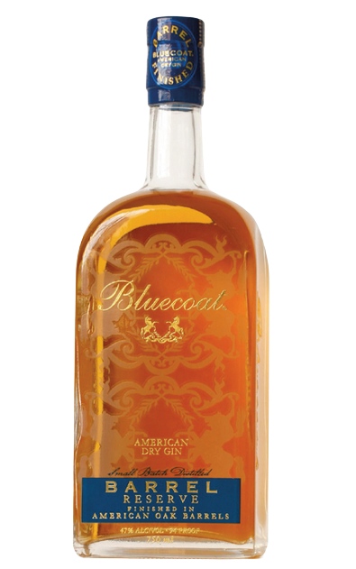
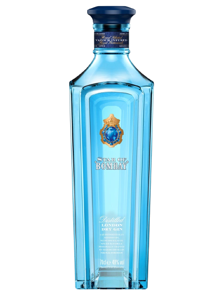
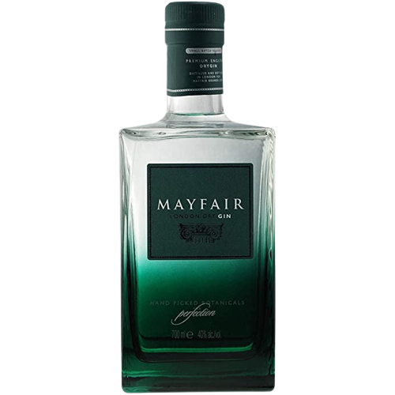
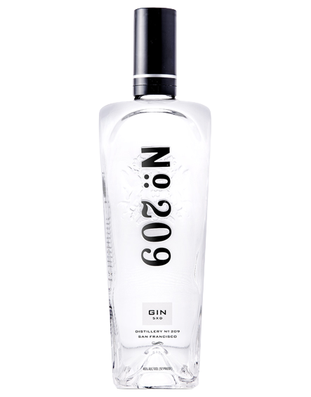

La historia de la Ginebra
La ginebra es un licor, cuyos origines se encuentran en el corpus alquímico escrito por Jabir ibn Hayyan, o Geber según la latinización del nombre, que está basado en conceptos alquímicos y religiosos. La historia de la ginebra comienza aquí. Es el final del siglo VIII, una era repleta de descubrimientos, una época conflictiva, y en Persia, donde nació la destilación fraccionaria, descrita por primera vez por Jabir Ibn Hayyan. El paso clave fue la transformación del arte de la alquimia, que hasta entonces había sido puramente esotérica, en un libro de éxito que hizo su camino alrededor del mundo.

Este es un grabado coloreado de Pierce Egan de su serie de grabados “La vida en Londres” de 1820. En ella vemos una escena en un bar de ginebra o sluicery.
Fabricación
La planta de enebro, que da origen a este destilado, tiene muchas utilidades valiosas y no se limita a proporcionar sus bayas para le medicina. La primera bebida con sabor a enebro documentada, que podría definirse como proto-gin, fue producida de hecho en Salerno. Es al rededor del año 1000 y los monjes benedictinos que viven allí, que fueron probablemente los primeros en cultivar un jardín botánico con el objetivo de extraer ingredientes vegetales activos, intentando destilar un licor mezclado con enebro pro primera vez, con la intención de infundir las michas propiedades beneficiosas de esta planta, que estaba muy extendida en la zona. La schola medica salernitana menciona un aceite de ungüento basado en el enebro como remedio contra la fiebre cuartana, una fiebre que se repite intermitentemente cada cuatro días; eso también es típico de la fiebre de la malaria, que decisivamente cruza su camino con la historia de la ginebra más tarde.
El ingrediente base para la producción de alcohol era presumiblemente la uva, y es muy probable que el producto resultante tuviera básicamente el mismo aroma que un licor de grappa de enebro, pero el punto clave en la historia es que el enebro se añade al destilado; El invento se desarrolla y se difunde; viaja a través de la historia pasando por diferentes etapas hasta llegar a ser como lo conocemos hoy en día.
La ginebra hoy en día se ha convertido en un licor a base de cereales, destilado con enebro y otros botánicos; es cosmopolita y multiuso, propiedad de grandes empresas multinacionales. Así como la ginebra entro en su nueva era. Las empresas de marketing, el creciente colectivo mundial de bartenders e internet garantizan, su punto de inflexión. Se ven lanzamientos de nuevas ginebras, anunciadas como "inusuales", contrarrestando la tradición centenaria, y al mismo tiempo comienzan a surgir pequeños productores, capaces de despertar al interés por su búsqueda de la más alta calidad posible.
ginebras
Ginebras inspiradas en la tradición, el enebro es el protagonista absoluto, las recetas son bastante simples y el número tanto como los ingredientes son limitados.
bluecoat
Estilo: ginebra Seca/tradicional.
Producción: alambique tradiconal de cobre discontinuo.
Botanicos: enebro, cilantro, limón, angélica.
Pais: Estados Unidos.
Sabor
Aroma: notas citricas evidentes de limónPaladar: suave, muy citrico y picante.
Acabado: seco, fresco y puro.
Ideal: en un Martini o en un Aviation.
star of bombay
Estilo: Ginebra Seca/tradicional.
Producción: alambique discontinuo Carter-Head.
Botanicos: enebro, cáscara de limón, angelica.
Pais: Reino Unido.
Sabor
Aroma: intenso con cilantro, angélica, limón y enebro.>Paladar: aromático y muy floral, con citricos y especias.
Acabado: balsámico y picante con notas de regaliz.
Ideal: en Gin&Soda para realzar las notas aromáticas.
mayfair
Estilo: Ginebra Seca/tradicional.
Producción: Alambique tradicional de cobre discontinuo.
Botanicos: enebro, angélica, iris, cilantro y ajedrea.
Pais: Reino Unido.
Sabor
Aroma: enebro y coníferas y una nota de limón.Paladar: suave y con evidente presencia de enebro.
Acabado: seco con notas de limón y cilantro.
Ideal: en cóctel Negroni.
n°209
Estilo: Ginebra Seca/tradicional
Producción: Alambique tradicional de cobre tradicional.
Botanicos: enebro de Calabria, naranja de bergamota.
Pais: Estados Unidos.
Sabor
Aroma: notas de pino y enebro, seguido notas maderosa.Paladar: notas frescas de enebro y coníferas y citricos.
Acabado: suave y decisivo con una nota de y regaliz.
Ideal: en Gin&Tonic con una rodaja limón o en un Gimlet.
cócteles
aviation
Ingredientes
60 ml ( 2 oz ) : Ginebra20 ml ( 2/3 oz ) : Zumo de limón
07 ml ( 1/5 oz ) : Licor de crema de Violeta
05 ml ( 1/6 oz ) : Licor de Maraschino
Preparación
Colocar los ingredientes en una coctelera previamente refrescada. Agitar enérgicamente unos 15 segundos. Verter el contenido en una copa de cristal y decorar con una cereza o guinda. Si bien la crema de violeta es licor del que se puede prescindirse si no se tiene a mano, en realidad está en el origen del cóctel.
Curiosidades
El cóctel Aviador fue creado a principios del siglo pasado por el barman Hugo Ensslin, del hotel Wallick de Nueva York, y apareció publicado por primera vez en su recetario de 1916. Más tarde Harry Craddock omitiría la referencia a la crema violeta en su influyente obra de 1930 Savoy Cocktail Book, por la dificultad de encontrar este aditivo.
negroni
ingredientes
30 ml ( 1 oz ) : Ginebra30 ml ( 1 oz ) : Campari
30 ml ( 1 oz ) : Vermut Rosso
1 dash agua de soda o tonica [opcional] <
Preparacion
Introducir los ingredientes en un vaso mezclador con hielo y remover. Verter el contenido en un vaso Old Fashioned, directamente sobre los cubitos de hielo. Decorar con una rodaja de piel de limón o de naranja. Un gran clásico con muchas variantes; También puede ser elaborado y mezclado directamente en el vaso. La técnica remover & colar lo hace más homogéneo y armonioso. La rodaja de naranja también se puede considerar un ingrediente, ya que influye en el sabor y el aroma del cóctel.
Curiosidades
El Negroni nació en el Caffé Casoni, una especie de tienda multiusos ubicada en el corazón de
Florencia.
Corría el año 1919 cuando el conde Camillo Negroni, aficionado a la buena vida y cansado de
beber siempre un Americano, el cóctel más de moda en aquella época, pidió al barman Fosco
Scarselli que le "fortaleciera" la bebida sustituyendo la soda por algo más pegada. No se sabe
si fue al conde o al barman Fosco a quien se le ocurrió escoger la ginebra. El cóctel también se
reemplazó la rodaja de limón característica del Americano por una rodaja de naranja, para
distinguir esta bebida del nuevo combinado Negroni.
tom collins
Ingredientes
50 ml ( 1 3/4 oz ) : Ginebra30 ml ( 1 oz ) : Zumo de limón
15 ml ( 1/2 oz ) : Sirope
120 ml ( 4 oz ) : Agua tónica o soda
Preparacion
En un vaso mezclador con hielo introducir los ingredientes excepto (tradicionalmente ginebra Old
Tom, que es de donde procede el nombre) excepto la soda o agua tónica según la preferencia.
Remover bien los ingredientes con la cuchara mezcladora y filtrar en un vaso largo con hielo.
Terminar de rellenar con la soda o agua tónica y remover de nuevo con delicadeza, para no romper
el gas carbónico.
Decorar con una rodaja de limón y una guinda.
Curiosidades
¿El cóctel se llama John o Tom Collins? La confusión procede del origen mismo del cóctel, que parece haber sido inventado por John Collins, barman en Limmer's, un famoso café londinense que estuvo abierto entre 1790 y 1817. El nombre habría pasado de John a Tom Collins tras la llegada de ka ginebra Old Tom, que era la que siempre empleaba John Collins, tomando el nombre de la ginebra y el apellido del barman. La ginebra Old Tom es una ginebra suave hoy rara de encontrar.
clover club
ingredientes
50 ml ( 1 3/4 oz ) : Ginebra20 ml ( 2/3 oz ) : Zumo de limón
15 ml ( 1/2 oz ) : Licor Americano Cocchi
15 ml ( 1/2 oz ) : Sirope de frambuesa
1 Clara de huevo
Preparacion
Introducir los ingredientes en una coctelera previamente enfriada y agitar enérgicamente unos 15 segundos. Verter el contenido en una copa Coupette previamente enfriada y decorar con frambuesas. Si se desea crear una capa de espuma en la superficie, hay que agitar los ingredientes en seco (sin hielo) en la coctelera durante más de medio minuto antes de añadir el hielo para enfriar el cóctel.
Curiosidades
Este cóctel clásico data de la época anterior a la Ley Seca, pues aparece citado ya en 1910, y recibe el nombre del primer club homónimo --traducido significa "Club del Trébol"-- que se reunía en el hotel Bellevue-Stranford de filadelfia y estaba integrado por magnates de la industria norteamericana. Desde entonces ha mantenido su prestigio como bebida altamente distinguida.
ramos gin fizz
Ingredientes
60 ml ( 2oz ) : Ginebra30 ml ( 1 oz ) : Sirope
30 ml ( 1 oz ) : Nata liquida 15 ml ( 1/2 oz ) : Zumo de limón
15 ml ( 1/2 oz ) : Zumo limón sutil
3 Golpes de agua de azahar
Preparacion
Introducir todos los ingredientes en una coctelera previamente enfriada. Agitar en seco (sin hielo) durante unos minutos. Agregar el hielo y batir un minuto más. Verter el contenido en un vaso Higball(largo). Al final verter un poco de agua con gas para el efecto fizz.
Curiosidades
Nueva Orleans, la cuna del jazz, tiene también el honor de haber visto nacer uno de los más grandes cócteles de la historia. Fue la capital de Luisiana donde hacia 1888 Henry C. Ramos inventó el Ramos Gin Fizz, al principio bautizado como New Orleans Fizz. Su combinado tuvo tanto éxito que antes de la Ley Seca el local de los hermanos Ramos, el Imperial Cabinet Saloon, era famoso por tener a más de treinta experimentados barmans trabajando al mismo tiempo solo para alcanzar a servir los pedidos de este cóctel.